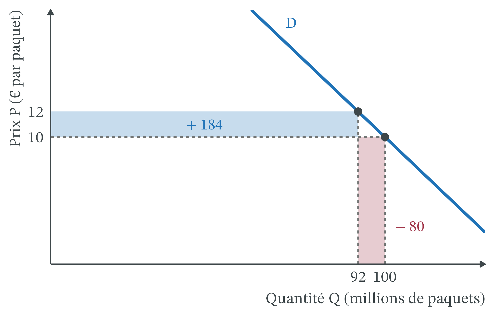
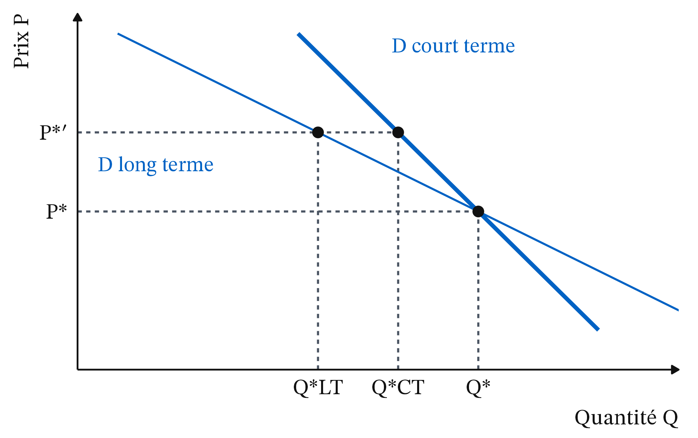

Augmenter le prix du tabac fait-il arrêter de fumer ?
CM 2 · Partie I · Marchés, prix et régulations
Élasticité-prix, incidence d’une taxe, addiction rationnelle.
- Offre et demande : la quantité demandée baisse quand le prix monte, la quantité offerte augmente ; à l’équilibre (P*, Q*), elles sont égales. Une variation du prix fait glisser le long des courbes ; une autre cause (coût, goûts, taxe) déplace une courbe : O → O′.
- Élasticité-prix de la demande : e = variation de Q (en %) ÷ variation de P (en %). Elle est négative. Si |e| est inférieur à 1, la demande est peu élastique.
- Impôt indirect : impôt inclus dans le prix d’un bien, versé à l’État par le vendeur. La TVA est un pourcentage du prix ; une accise frappe un produit précis (tabac, alcool, carburant), par unité ou en pourcentage.
- Externalité : effet d’un agent sur d’autres, sans compensation par le marché (le tabagisme passif). Une taxe correctrice, au sens de Pigou, fait payer ce coût à celui qui le cause.
- Positif et normatif : l’analyse positive décrit ce qui est ; l’analyse normative dit ce qui devrait être, à partir d’un jugement de valeur.
1 La question
En février 2026, un paquet type de 20 cigarettes coûte 13,50 € en France métropolitaine (C. Hill, Impact de l’augmentation des prix sur la consommation de tabac, 2026, tableau 5.2). Le prix moyen d’un paquet était de 3,20 € en 2000 et de 13 € en 2025 (I. Obradovic, The Conversation, 25/07/2026). Au 1er novembre 2026, 59 références sur 4 999 changent de prix (37 hausses, 22 baisses) : le Marlboro Red en paquet souple passe de 13,50 € à 14,00 €, le paquet rigide reste à 13,50 € (Bourse Inside, 08/10/2026, d’après l’arrêté d’homologation du 29/09/2026).
Dans le même temps, la consommation recule. En 2025, le réseau des buralistes de métropole a vendu 30 165 tonnes de tabac, contre 32 846 tonnes en 2024, soit −8,2 % (OFDT, cité par l’AFP, CB News, 28/05/2026). La part des fumeurs quotidiens chez les 18-75 ans passe d’environ 25 % en 2014 à 18 % en 2024 (Santé publique France, citée par La finance pour tous, 24/07/2026). Le tabac reste pourtant meurtrier : 68 000 décès prématurés lui sont attribués en France en 2023 (ibid.).
La question de la séance : augmenter le prix du tabac fait-il arrêter de fumer ? Elle en contient trois.
- De combien les ventes baissent-elles quand le prix monte ? C’est l’élasticité.
- Qui paie vraiment la taxe : le fumeur, le fabricant, le buraliste ? C’est l’incidence fiscale.
- Un fumeur dépendant réagit-il au prix comme un acheteur ordinaire ? C’est l’économie de l’addiction.
2 Apports théoriques
2.1 L’élasticité mesure la force de la réaction au prix
Marshall, qui a fait de l’élasticité l’outil de mesure de la réaction au prix, note qu’elle dépend des substituts et du temps laissé aux acheteurs (1890).
Définition 1 (Dépense totale et élasticité) La dépense totale des acheteurs est P × Q ; c’est aussi la recette des vendeurs. Quand le prix monte :
- si la demande est peu élastique (|e| < 1), la quantité baisse moins vite que le prix ne monte : la dépense augmente ;
- si la demande est élastique (|e| > 1), la quantité baisse plus vite : la dépense diminue.
On définit de même l’élasticité de l’offre : variation de la quantité offerte (en %) ÷ variation du prix (en %). Elle est positive.
Pour le tabac, les estimations sont nettement inférieures à 1 en valeur absolue. Santé publique France retient e ≈ −0,4 pour 2000-2015, et des études récentes donnent entre −0,3 et −0,4 (La finance pour tous, 24/07/2026). Sur 1950-2025 (hors 2016, année aberrante), le rapport moyen entre la variation des ventes et celle du prix vaut environ −0,50 (Hill, 2026, figure 4.2). Retenons une fourchette : e est compris entre −0,5 et −0,3. Une hausse de 10 % du prix fait baisser les ventes de 3 à 5 %.
2.2 Ce n’est pas celui qui verse la taxe qui la paie
L’accise sur le tabac est versée à l’État par les vendeurs, en amont du buraliste : celui-ci achète des paquets taxes comprises. Mais un vendeur peut répercuter la taxe dans le prix. La vraie question est donc : qui supporte la charge ?
 Avant 1885 · photographie prêtée par Mrs Dew Smith, frontispice du Memoir de R. L. Stevenson, domaine public, Wikimedia Commons
Avant 1885 · photographie prêtée par Mrs Dew Smith, frontispice du Memoir de R. L. Stevenson, domaine public, Wikimedia Commons
Fleeming Jenkin (1872), « On the Principles which Regulate the Incidence of Taxes », Proceedings of the Royal Society of Edinburgh · précurseur de l’analyse néoclassique. Jenkin est l’un des premiers à tracer des courbes d’offre et de demande. Il s’en sert pour montrer que la charge d’une taxe dépend de la forme des deux courbes, et non de celui qui la verse.
Définition 2 (Incidence fiscale) L’incidence fiscale est la répartition réelle de la charge d’une taxe entre acheteurs et vendeurs. L’incidence légale dit qui verse la taxe à l’État. L’incidence économique dit qui la supporte : les acheteurs, par la hausse du prix qu’ils paient ; les vendeurs, par la baisse du prix qu’ils gardent. Elle dépend des élasticités de l’offre et de la demande, et non de celui qui verse la taxe.
Le principe se résume en une phrase : la charge retombe sur le côté du marché le moins élastique, celui qui peut le moins se dérober. Un fumeur dépendant a peu de substituts à court terme ; il est donc en mauvaise position pour échapper à la taxe.
2.3 Un fumeur qui anticipe : l’addiction rationnelle
On pourrait croire qu’un produit addictif échappe à la logique du prix. Deux théories orthodoxes disent le contraire, mais n’en tirent pas les mêmes conclusions.
 2008 · MAR, domaine public, Wikimedia Commons
2008 · MAR, domaine public, Wikimedia Commons
Gary S. Becker et Kevin M. Murphy (1988), « A Theory of Rational Addiction », Journal of Political Economy, 96(4), 675-700 · école de Chicago. Fumer aujourd’hui augmente l’envie de fumer demain : c’est ce qui définit l’addiction. Un fumeur rationnel le sait et tient compte des prix futurs ; une hausse de prix durable et annoncée réduit donc la consommation, un peu tout de suite et davantage à long terme.
Définition 3 (Addiction rationnelle) Une consommation est addictive quand la quantité consommée aujourd’hui augmente l’envie de consommer demain. Elle est rationnelle, au sens de Becker et Murphy, quand le consommateur prend en compte cet effet et les prix futurs dans ses choix. Conséquence : la demande est plus élastique à long terme qu’à court terme.
 2014 · Commission de surveillance de la Chambre des représentants des États-Unis, domaine public, Wikimedia Commons
2014 · Commission de surveillance de la Chambre des représentants des États-Unis, domaine public, Wikimedia Commons
Jonathan Gruber et Botond Kőszegi (2001), « Is Addiction “Rational”? Theory and Evidence », Quarterly Journal of Economics, 116(4), 1261-1303 · économie comportementale. Aux États-Unis, la consommation de cigarettes baisse dès qu’une hausse de taxe est votée, avant même qu’elle s’applique : les fumeurs anticipent bien. Mais beaucoup voudraient arrêter et n’y arrivent pas ; la taxe les aide alors à tenir leurs propres résolutions.
Définition 4 (Internalité) Une internalité est un coût qu’une personne s’impose à elle-même, dans le futur, sans en tenir compte au moment de choisir : le fumeur qui voulait arrêter et n’y arrive pas. Une externalité pèse sur les autres ; une internalité pèse sur son propre « moi futur ».
La différence entre les deux théories n’est pas dans la prédiction, mais dans la politique. Chez Becker et Murphy, le fumeur choisit en connaissance de cause : une taxe ne se justifie que par le coût imposé aux autres. Chez Gruber et Kőszegi, la taxe doit aussi tenir compte de l’internalité ; ils estiment qu’elle devrait être plus élevée d’au moins un dollar par paquet aux États-Unis que dans le modèle de Becker et Murphy (Gruber et Kőszegi, NBER Working Paper n° 7507, 2000).
3 Les outils
3.1 Plus la demande est inélastique, plus la dépense monte avec le prix
La dépense P × Q est l’aire d’un rectangle sous la demande : quand le prix monte, on gagne un rectangle (les paquets encore achetés coûtent plus cher) et on en perd un (les paquets abandonnés).
Exemple 1 (Élasticité et dépense des fumeurs) Sur un marché fictif, le paquet coûte 10 € et il s’en vend 100 millions par an. Le prix passe à 12 €.
- La variation du prix. (12 − 10) ÷ 10 = 0,20 : le prix monte de 20 %.
- Avec e = −0,4 (demande peu élastique, comme celle du tabac). La quantité varie de −0,4 × 20 = −8 %. On vend 100 × 0,92 = 92 millions de paquets.
- La dépense. Avant : 10 × 100 = 1 000 millions d’euros. Après : 12 × 92 = 1 104 millions, soit +10,4 %. Les fumeurs achètent moins de paquets, mais dépensent plus. Sur la Figure 1 : 184 millions gagnés, 80 millions perdus, 184 − 80 = 104 millions de plus.
- Avec e = −1,5 (demande élastique, pour comparer). La quantité varie de −1,5 × 20 = −30 % : on vend 70 millions de paquets. La dépense tombe à 12 × 70 = 840 millions, soit −16 %.
Même hausse de prix, deux histoires. Avec une demande peu élastique, la hausse frappe surtout le budget des fumeurs ; avec une demande élastique, elle réduit surtout la consommation.
3.2 Une taxe crée un coin entre le prix payé et le prix gardé
Une taxe t par paquet, versée par le vendeur, agit comme une hausse de son coût : pour accepter de vendre une quantité donnée, il demande désormais t euros de plus. La courbe d’offre se déplace vers le haut de t : O → O′ = O + t.
![Graphique offre-demande. La demande D est une droite décroissante bleue et raide, l'offre O une droite croissante ambre. L'offre O prime égale O plus t, en tirets, est parallèle à O et plus haute. L'équilibre initial E est en P étoile, Q étoile. Le nouvel équilibre E prime a une quantité Q étoile prime plus faible et un prix P étoile prime plus élevé. Un trait rouge vertical marqué t relie, à la quantité Q étoile prime, le prix P étoile prime moins t sur l'offre O au prix P étoile prime. À gauche, un grand rectangle bleu entre P étoile et P étoile prime est marqué payé par les acheteurs ; un rectangle orangé plus mince entre P étoile prime moins t et P étoile est marqué payé par les vendeurs.](cm2_files/figure-html/fig-incidence-1.png)
Au prix P*, les vendeurs, qui doivent maintenant reverser t, offrent moins : le prix payé monte jusqu’à E′ et la quantité baisse de Q* à Q*′ (on glisse le long de D). L’acheteur paie P*′ au lieu de P* ; le vendeur reçoit P*′, reverse t et garde P*′ − t, moins que P*. Chacun supporte une partie de la taxe.
Exemple 2 (Qui paie une taxe de 5 € par paquet ?) Sur un marché fictif, Q est en millions de paquets et P en euros. L’offre s’écrit Q = 16 P − 60. On compare deux demandes qui passent toutes deux par 100 millions de paquets à 10 € (Figure 3) : A, Q = 140 − 4 P (peu élastique), et B, Q = 260 − 16 P (plus élastique). On crée une taxe t = 5 € par paquet, versée par le vendeur.
- L’équilibre sans taxe. Pour A comme pour B, à 10 € la demande vaut 100 et l’offre 16 × 10 − 60 = 100 : P* = 10 € et Q* = 100.
- Les élasticités au départ. Si le prix monte de 1 € (+10 %), la demande A perd 4 millions de paquets (−4 %) : e = −4 ÷ 10 = −0,4. La demande B perd 16 millions (−16 %) : e = −1,6. L’offre gagne 16 millions (+16 %) : son élasticité vaut 1,6.
- La taxe. Le vendeur garde P − 5. L’offre devient Q = 16 (P − 5) − 60 = 16 P − 140.
- Le nouvel équilibre, cas A. On cherche le prix où 140 − 4 P = 16 P − 140, soit 20 P = 280 : P*′ = 14 €. On vend 140 − 4 × 14 = 84 millions de paquets. Le vendeur garde 14 − 5 = 9 €.
- Le partage, cas A. L’acheteur paie 4 € de plus (10 → 14), le vendeur garde 1 € de moins (10 → 9). Sur les 5 € de taxe, 4 € (80 %) pèsent sur les acheteurs et 1 € (20 %) sur les vendeurs.
- La recette fiscale, cas A. 5 × 84 = 420 millions d’euros, dont 4 × 84 = 336 millions payés par les acheteurs et 1 × 84 = 84 millions par les vendeurs. La dépense des acheteurs passe de 1 000 à 14 × 84 = 1 176 millions.
- Le cas B. 260 − 16 P = 16 P − 140 donne 32 P = 400 : P*′ = 12,50 €, Q*′ = 60 millions, le vendeur garde 7,50 €. La taxe est partagée moitié-moitié (2,50 € chacun). La recette n’est que de 5 × 60 = 300 millions : la quantité a baissé de 40 %.
La règle. La part payée par les acheteurs vaut : élasticité de l’offre ÷ (élasticité de l’offre + |e|). Cas A : 1,6 ÷ (1,6 + 0,4) = 0,8. Cas B : 1,6 ÷ (1,6 + 1,6) = 0,5.

« Le buraliste encaisse la taxe, donc c’est lui qui la paie. » C’est faux. Refaites l’Exemple 2 en faisant verser la taxe par l’acheteur. C’est alors la demande qui se déplace, vers le bas de 5 € : pour chaque quantité, l’acheteur n’accepte plus de payer au vendeur que 5 € de moins qu’avant. On trouve le même équilibre : le vendeur reçoit 9 €, l’acheteur paie 9 + 5 = 14 € en tout. Seules les élasticités décident du partage.
Une demande peu élastique est donc une bonne assiette fiscale : la recette est plus élevée (420 contre 300 millions), parce que la quantité baisse peu. Mais la taxe rapporte d’autant plus qu’elle change peu les comportements : faire baisser la consommation et financer l’État sont deux objectifs en partie contradictoires.
3.3 Sur un paquet à 13,50 €, l’État prend 82,5 %
En France, ce sont les fabricants qui proposent le prix de vente de chaque produit ; l’administration des douanes l’homologue et le publie au Journal officiel (Hill, 2026, § 3.1). L’État fixe les taxes, les fabricants fixent les prix. Les taxes se calculent sur le prix de vente.
Exemple 3 (La composition du prix d’un paquet de cigarettes) Taux en vigueur au 1er janvier 2026, pour un paquet de 20 cigarettes à 13,50 € (Hill, 2026, § 5.1 et tableau 5.2).
- L’accise proportionnelle : 55 % du prix de vente, soit 0,55 × 13,50 ≈ 7,43 €.
- L’accise spécifique : un montant fixe de 73,30 € pour 1 000 cigarettes, soit 1,466 € par paquet. Les deux accises font 7,43 + 1,466 ≈ 8,89 €.
- La TVA : 20 % du prix hors TVA, soit 20 ÷ 120 = un sixième du prix de vente : 13,50 ÷ 6 = 2,25 €.
- Le total des taxes : 8,89 + 2,25 ≈ 11,14 €, soit 11,14 ÷ 13,50 ≈ 82,5 % du prix.
- Le reste : 13,50 − 11,14 = 2,36 €. Le buraliste touche une remise brute de 10,29 % du prix (taux de 2025, Hill, 2026, tableau 6), soit environ 1,39 €. Il reste environ 0,97 € au fabricant (7,2 % du prix).
- Si le prix de vente monte de 1 €. L’accise proportionnelle en prend 0,55 €, la TVA un sixième d’euro, soit environ 0,17 €, et le buraliste environ 0,10 € (10,29 %). Il reste environ 0,18 € au fabricant. L’État reçoit donc 0,72 € de cet euro.
Le raisonnement de la séance enchaîne trois étapes, que le tableau résume.
| Étape | Ce qui se passe | Outil |
|---|---|---|
| 1. La taxe | L’État relève l’accise ; le prix de vente monte de tout ou partie de la taxe (incidence) | Figure 2 |
| 2. La réaction | La quantité achetée baisse de e × la hausse en % ; peu au début, plus à long terme (addiction) | Figure 4 |
| 3. Le bilan | La dépense des fumeurs et la recette de l’État montent si |e| < 1, mais la consommation baisse moins que le prix ne monte | Figure 1 |
3.4 L’addiction rend la demande plus élastique à long terme

Avec des valeurs fictives : si e vaut −0,3 la première année et −0,6 au bout de plusieurs années, une hausse durable de 20 % réduit la consommation de 6 % la première année, puis de 12 %. Becker et Murphy expliquent cet écart par l’addiction elle-même : celui qui fume moins aujourd’hui aura moins envie de fumer demain.
3.5 En France, le prix a fait baisser les ventes, mais avec des fuites
L’effet sur les ventes. De 2006 à 2025, le prix réel du tabac (corrigé de l’inflation) a été multiplié par 2,1 et les ventes de cigarettes des buralistes par adulte divisées par 2,6 (Hill, 2026, chapitre 4). Selon la plupart des experts, une hausse de prix agit pour moitié sur le nombre de fumeurs (surtout des adultes qui arrêtent) et pour moitié sur la quantité fumée par chacun (OMS, 2012, et Hill, 2026, § 4.3). La réponse est donc oui, en partie : d’autres mesures ont joué en même temps (campagnes, interdiction de vente aux mineurs, ibid.), et ce « oui » repose sur une corrélation, pas sur une expérience.

Les comptes nationaux de l’Insee confirment cette image (Figure 5) : de 2000 à 2025, le prix est multiplié par 4,6, les quantités sont divisées par 2,8 et la dépense augmente de 64 % en euros courants. Les prix en général ayant monté de 59 % (Eurostat, indice des prix à la consommation harmonisé, février 2026), le prix réel du tabac est multiplié par 2,9 et la dépense corrigée de l’inflation est presque stable (+3 %). Les quantités baissent donc presque autant que le prix réel monte : à long terme, la réaction est bien plus forte que d’une année sur l’autre (Figure 4), mais elle mêle l’effet du prix et celui des autres mesures.
Les fuites. Les ventes des buralistes ne sont pas la consommation. Une hausse limitée aux cigarettes pousse vers le tabac à rouler, moins cher : jusqu’en 2013, 10 % de hausse du prix des seules cigarettes faisaient monter de 4,2 % ses ventes (Hill, 2026, chapitre 4). S’y ajoutent les achats à l’étranger et la contrebande : selon l’étude TAFE des douanes et de la Mission interministérielle de lutte contre les drogues et les conduites addictives (MILDECA), citée par le ministère de l’Action et des Comptes publics, 17,7 % des produits du tabac échappent en moyenne aux buralistes, soit 8 081 tonnes et 4,3 milliards d’euros de taxes (JO Sénat, 26/02/2026, réponse à la question écrite n° 04515). En 2025, les volumes de cigarettes saisis par les douanes augmentent de 24,5 % (AFP, CB News, 28/05/2026).
![Graphique en lignes de 1991 à 2025. La recette en euros courants, en bleu, passe de 3,3 milliards en 1991 à 8 milliards en 2000, 10,5 milliards en 2010, puis culmine à 14,4 milliards en 2020 avant de redescendre à 12,7 milliards en 2025. La recette en euros constants, en orange, suit la même allure mais monte moins : environ 8 à 10 milliards de 2000 à 2019, 11 milliards en 2020, puis 8,5 milliards en 2025. Une ligne verticale en tirets marque l'année 2020, sommet atteint quand les frontières étaient fermées.](cm2_files/figure-html/fig-recettes-1.png)
La recette fiscale. Une demande peu élastique est une bonne assiette (Exemple 2) : de 1991 à 2020, la recette du droit de consommation est multipliée par 4,4 en euros courants (Figure 6). Le pic de 2020 tient en partie aux frontières fermées pendant le Covid, qui ont ramené chez les buralistes des achats faits d’ordinaire à l’étranger (Hill, 2026, § 1.2). Par rapport à 2019, la recette de 2025 est stable en euros courants (12,60 puis 12,74 Md€) et baisse d’environ 13 % en euros constants, alors que le prix monte toujours. Moins de fumeurs, ce qui est le but sanitaire, ou plus d’achats hors réseau, ce qui est une fuite ? Les deux peuvent se cumuler, et les données ne permettent pas de trancher : l’auteure du rapport reproche à l’État de ne pas s’être donné les moyens de mesurer ces achats de façon indépendante (Hill, 2026, conclusion).
Ne pas calculer une élasticité sur les seules ventes légales. Si une partie des fumeurs achète en Belgique ou au marché noir, les ventes des buralistes baissent plus que la consommation. On surestime alors l’effet du prix sur la santé, et l’on prend pour un arrêt du tabac ce qui est en partie une fuite, dont le coût pour les recettes passe inaperçu. L’élasticité mesurée par Hill est celle des ventes enregistrées, pas de la consommation.
4 Effets de répartition
4.1 Les plus jeunes et les plus modestes sont les plus touchés, pour le meilleur et pour le pire
Par génération. Les jeunes sont plus sensibles au prix que leurs aînés (Hill, 2026, § 4.3), sans doute parce que leur budget est plus petit et leur dépendance moins installée. Le tabagisme quotidien des lycéens passe de 30,8 % en 2010 à 5,6 % en 2024 (AFP, CB News, 28/05/2026). Ce sont sans doute eux qui gagnent le plus en santé. Mais l’écart entre filières reste fort. Selon l’enquête ESCAPAD de l’OFDT, menée en mars 2022 auprès des jeunes de 17 ans et citée par I. Obradovic (The Conversation, 25/07/2026), 22,1 % des élèves de lycée professionnel fument tous les jours, contre 10,1 % en lycée général ou technologique, et 38,4 % des apprentis. Ces chiffres ne se comparent pas aux 5,6 % des lycéens : autre enquête, autre année, et un seul âge au lieu de tous les lycéens.
Par revenu. Une taxe sur le tabac est régressive : un paquet à 13,50 € pèse plus lourd dans un petit budget. En théorie, les ménages modestes devraient aussi réagir davantage au prix et gagner le plus en santé ; mais les données françaises disponibles ne le montrent pas (Hill, 2026, § 4.3). La part de fumeurs chez les chômeurs a même augmenté jusqu’en 2016, quand elle baissait chez les actifs occupés et les étudiants (Hill, 2026, § 2.4). Pour les fumeurs qui n’arrivent pas à arrêter, la hausse est une perte de pouvoir d’achat.
Par territoire. Près des frontières, le paquet est moins cher de l’autre côté. Les buralistes des départements frontaliers perdent des ventes ; l’État les a compensés par des aides (Hill, 2026, § 7.6). Les hausses de taxes en Belgique et au Luxembourg ont réduit l’avantage d’y aller acheter (AFP, CB News, 28/05/2026).
Par genre. L’écart entre hommes et femmes s’est beaucoup réduit. En 1953, 72 % des hommes et 17 % des femmes fumaient régulièrement ; en 2024, 20,4 % des hommes et 16,2 % des femmes (sondages Seita, Insee, Inpes puis Santé publique France, Hill, 2026, tableau 2.1).
4.2 Les vendeurs et l’État : des gains qui s’effritent
L’État perçoit 82,5 % du prix du paquet (Exemple 3) : 12,74 milliards d’euros de droit de consommation en 2025, hors TVA (Figure 6). Les buralistes voient leur remise suivre le prix, mais leur nombre baisse, de 32 850 en 2002 à 22 800 en 2025 (Hill, 2026, tableau 6). Les fabricants gardent moins de 1 € par paquet de 13,50 €, mais fixent les prix. Les non-fumeurs gagnent : moins de tabagisme passif. Dans le monde, l’OMS attribue au tabac plus de 7 millions de morts par an, dont 1,6 million de non-fumeurs exposés à la fumée des autres (La finance pour tous, 24/07/2026).

5 La controverse
5.1 Faut-il continuer à augmenter le prix du tabac ?
Analyse positive (ce qui est : mécanismes et effets, vérifiables).
- Une hausse de prix réduit les ventes, moins que proportionnellement (e entre −0,5 et −0,3), davantage à long terme et chez les jeunes.
- La taxe pèse surtout sur les fumeurs, et en proportion davantage sur les fumeurs modestes.
- Elle nourrit des fuites (tabac à rouler, achats à l’étranger, contrebande), dont l’ampleur est mal mesurée.
Analyse normative (ce qui devrait être : dépend de jugements de valeur).
- Faut-il protéger le fumeur contre lui-même ? Si l’on juge le fumeur pleinement rationnel, la taxe ne doit couvrir que le coût imposé aux autres. Si l’on juge qu’il n’arrive pas à tenir ses résolutions, une taxe plus forte se défend. C’est la question du paternalisme : jusqu’où l’État peut-il orienter les choix privés ?
- Comment peser santé et pouvoir d’achat ? La taxe améliore la santé de ceux qui arrêtent et appauvrit ceux qui continuent. L’OMS juge qu’elle peut devenir « un outil de politique publique favorable aux pauvres » si une partie des recettes finance l’aide au sevrage des ménages modestes (OMS, 2012, citée par Hill, 2026, § 7.6). Vue sous l’angle du pouvoir d’achat, c’est d’abord un impôt régressif.
Les positions en présence.
- L’école de Chicago (Becker et Murphy, 1988) : le fumeur informé choisit en connaissance de cause ; l’État doit l’informer et taxer les seuls dommages causés aux autres.
- L’économie comportementale (Gruber et Kőszegi, 2001) : les mêmes données s’accordent avec des fumeurs qui regrettent leurs choix ; la taxe optimale est plus élevée, car elle corrige aussi l’internalité.
- La santé publique (OMS ; Hill, 2026) : pour les experts de la Banque mondiale et de l’OMS, la hausse des prix est « de loin le moyen le plus efficace » de faire baisser les ventes (Hill, 2026, § 4.3). Ce rapport, engagé dans la lutte antitabac, reproche aux douanes, aux buralistes et à l’industrie d’avoir entretenu la confusion entre achats frontaliers licites et contrebande.
- Les buralistes : la profession, « fragilisée par l’ampleur croissante du marché parallèle », demande de limiter la hausse des accises à l’inflation (question écrite n° 04515 au Sénat, qui relaie ses demandes, JO Sénat, 08/05/2025). Le gouvernement répond que la lutte contre la contrebande est « une priorité majeure de la douane » (JO Sénat, 26/02/2026).
Le débat porte moins sur le sens de l’effet, admis par tous, que sur la taille des fuites (une question positive, mal mesurée) et sur le droit de l’État à orienter des choix privés (une question normative).
Les prix du tabac ne sont pas libres au sens ordinaire : chaque fabricant propose ses prix, que l’administration des douanes homologue et publie au Journal officiel ; d’après Bourse Inside (08/10/2026), l’arrêté du 29 septembre 2026 fixe les prix au 1er novembre 2026 (Hill, 2026, § 3.1, pour la procédure). La France a aussi ratifié la Convention-cadre de l’OMS pour la lutte antitabac, dont l’article 6 recommande d’augmenter les taxes sur le tabac (Hill, 2026, introduction).
6 À retenir
- L’élasticité-prix mesure de combien la quantité réagit au prix ; pour le tabac, e est compris entre −0,5 et −0,3 : une hausse de 10 % réduit les ventes de 3 à 5 %.
- Quand la demande est peu élastique, une hausse de prix augmente la dépense des acheteurs et la recette fiscale.
- La charge d’une taxe retombe sur le côté du marché le moins élastique, quel que soit celui qui la verse à l’État : pour le tabac, surtout sur les fumeurs.
- L’addiction n’annule pas l’effet du prix : la demande est plus élastique à long terme (Becker et Murphy) et chez les jeunes.
- Les ventes légales ne sont pas la consommation : tabac à rouler, achats à l’étranger et contrebande réduisent l’effet sanitaire et la recette.
- Faut-il taxer pour protéger le fumeur contre lui-même (internalité) ou seulement pour protéger les autres (externalité) ? C’est un jugement normatif.
7 Pour aller plus loin
Dessine-moi l’éco · « TVA collectée, TVA déductible… Qui paye réellement ? » · 3 min 38 · 2015 : la vidéo porte sur la TVA, pas sur le tabac, mais pose la même question de l’incidence
Articles
- La finance pour tous, « Augmenter le prix des cigarettes est-il un bon moyen de réduire la consommation de tabac ? », mis à jour le 24/07/2026. Lien
- The Conversation, I. Obradovic, « Alcool, tabac, cannabis : les jeunes se sont-ils vraiment détournés des drogues ? », 25/07/2026, mis à jour le 31/07/2026. Lien
- AFP, CB News, « Tabagisme à des niveaux “toujours plus bas” en France, chute des ventes chez les buralistes », 28/05/2026. Lien
- Bourse Inside, « Prix du tabac au 1er novembre : pourquoi il ne s’agit pas d’une hausse générale et ce qui change vraiment pour votre budget », 08/10/2026. Lien
Sources institutionnelles et rapports
- C. Hill, Impact de l’augmentation des prix sur la consommation de tabac, ex-Institut Gustave Roussy, 2026. Lien
- Sénat, question écrite n° 04515, « Lutte contre la contrebande de tabac », JO Sénat du 08/05/2025, et réponse du ministère de l’Action et des Comptes publics, JO Sénat du 26/02/2026. Lien
- J. Gruber et B. Kőszegi, « Is Addiction “Rational”? Theory and Evidence », NBER Working Paper n° 7507, 2000 (version publiée : Quarterly Journal of Economics, 2001). Lien
- G. S. Becker et K. M. Murphy, « A Theory of Rational Addiction », Journal of Political Economy, 1988. DOI